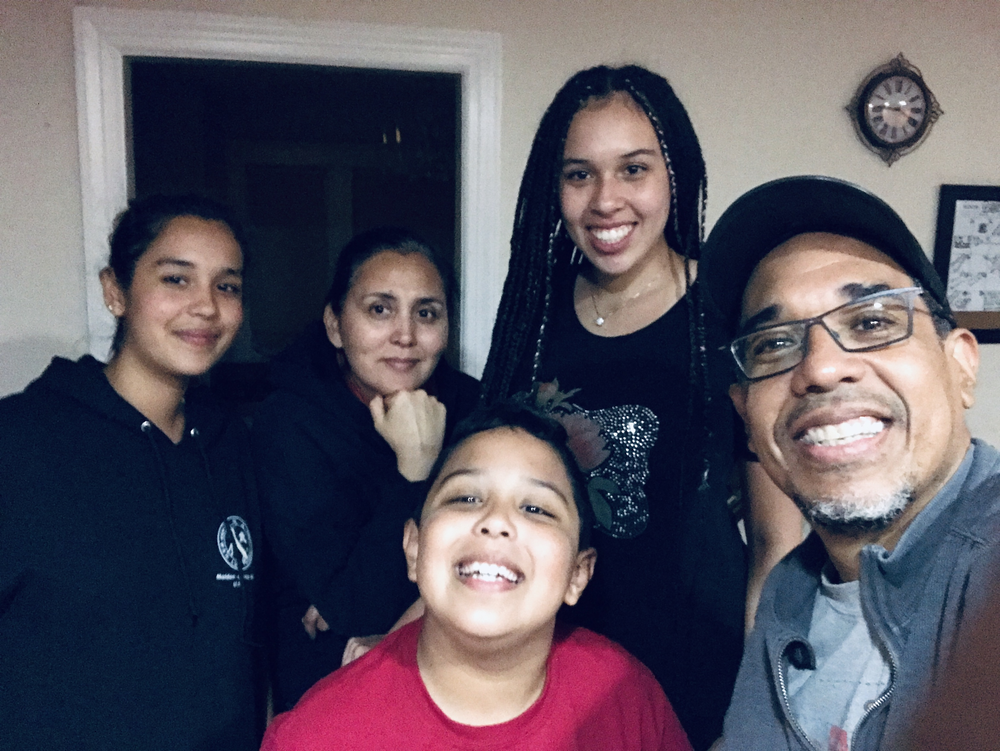

Meet Massachusetts Homeschoolers: The Perez Family
By Patricia Zarate Perez
With almost 60 million Latin@s living in the United States, it is very possible one such family is homeschooling in Massachusetts. Los Perez, with mother Patricia from Chile, father Danilo from Panama, and children Daniela (16), Carolina (14), and Danilo Andres (9) have lived in a liminal space for decades. In the intersection of the LatinX immigrant community, the academic circles of Boston, and the musical world of Berklee College, homeschooling is at the core of our values.
Our children have never attended a school. They have been homeschooled since birth in the state of Massachusetts, where the homeschooling community is very organized and children grow with many privileges not seen in many countries of Latin America, like libraries, museums, beautiful parks. It is difficult to explain what homeschooling is to the grandparents who fought hard to come out of poverty or out of rural areas to go to school. A world that seems surreal at first, homeschooling is a journey of constant love, compassion, and courage. With courage to decide to homeschool in Massachusetts, love to embrace the new adventure, and compassion to understand the worries of our families back in Latin America, learning at home was the best decision we made as parents of three beautiful children. The journey has not been easy. Our decision to homeschool affected our larger families greatly. We became the outcasts inside family and friend circles back in our countries. Mothers cried and begged to send our children to school to “learn English,” fathers asked about the socialization of their grandchildren. How could we obliterate our own education and deprive our children of such experience? What about the sacrifices our parents made for us to study in America—for what? To finally decide to take our children out of the school system?
After being students in Boston, then professionals, and then parents, homeschooling was a decision we took after careful study. Reading John Holt, John Taylor Gatto, and many others during pregnancy and first years of life, we decided by age six that we were reporting to the authorities we were homeschooling our children in our home in Quincy, MA. But even after studying different ways to homeschool, nobody could assure us homeschooling was going to work for us. Only time would tell and we would have to arm ourselves with courage to undertake such transformation.
The first years of homeschooling were heroic for us—father working after hours, mother exhausted in the home trying to figure it out. Our children were totally not impressed, traumatized, or disturbed by our homeschooling practices. They were just fine. The children pretty much adjusted, followed instructions, and behaved just like children. They loved to play, read, go to the museums, movies, and libraries of Boston, and take field trips. They were just happy to be home with us parents. They learned to read books, write narratives, and play music. Sometimes they misbehaved, and they were grounded. When either of us parents lost control of our lives, schedules, relationships with family or friends, they looked in awe as if we needed homeschooling for a while. We learned that what the books said was one thing, and making it happen in real life with three very different children and in different cultural contexts was another. Homeschooling our children continuously opened our minds as well as our hearts. Living in the space between what experts said was good for youngsters and what we felt was good for our children was and still is a constant struggle. Homeschooling made us hear many stories and study many pictures to make better decisions for our children. Love, courage and compassion had to be at the core of all decision making.
Our three children became different people because of homeschooling. They have gone through different phases in their academic lives, from not paying any attention to math, to loving it, from not reading a word, to reading obsessively, from abhorring to admiring each other. We found that the healthiest way to show our love for them was to help them become independent learners and thinkers who can rely on us while also maintaining their autonomy. They have experienced many subjects they love, and others they do not like so much and that has created a sense of their passions. They want to do many things in life, they love the process of learning, and most important, they feel loved. They are loved by us parents, and also by their larger families who, after 16 years, have seen nothing atrocious in the act of homeschooling. After decades of fighting it, our families have eased into the idea that we, as parents, decided to homeschool our children.
Right when we were starting to feel confident about our homeschooling practices, COVID-19 pandemic arrives. Now the coin has flipped, and we are teaching homeschooling practices in our communities. Suddenly, our words turned upside down and now our family needs our homeschooling tips to keep their schooled children at home entertained and productive. Their faith in the educational system they jealously defended 16 years ago collapsed in one second, while their acceptance of homeschooling skyrocketed in a week. Now we talk about love, compassion and courage as if it were the first time people heard these words. Worried parents ask the same questions we asked over a decade ago. We keep presenting the same strategy we used when we started homeschooling. Love, a force of nature bigger than ourselves, compassion and the concern for our loved ones, courage and strength in the face of pain and fear is what will help us in the next phase of our homeschooling lives. Even if you are one of those families who are homeschooling for the first time because of the pandemic, this mantra applies to you. Today, more than ever make love, compassion and courage the center of your family life, because when profound disruption exists, we all end up in the same place, back home.
Born and raised in Chile, saxophonist Patricia Zarate Perez moved to the US at age 20. She holds a Bachelor's Degree in Music Therapy from Berklee College of Music, a Masters Degree in Jazz Studies from New York University, and is a current graduate student of the PhD Program in Global Inclusion and Social Development at UMass Boston She is a professor at Berklee College of Music and serves as the Executive Director of the Panama Jazz Festival. She homeschools her three children ages 9, 14 and 16 in Quincy, Massachusetts with her husband, UNESCO Artist for Peace, Danilo Perez.